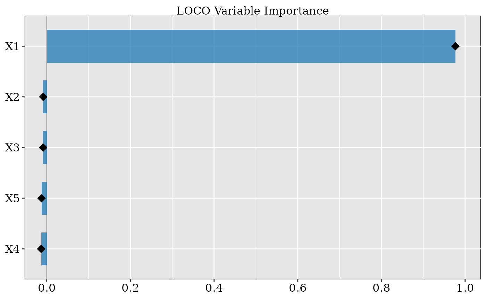

Draws a horizontal lollipop chart of LOCO variable importance scores, sorted from least to most important (bottom to top).
Usage
# S3 method for class 'cf_loco'
plot(x, ...)Arguments
- x
An object of class
"cf_loco"returned bycf_loco().- ...
Additional arguments (currently unused).
Details
Variables are displayed as horizontal segments ending in points, with
length proportional to importance. When normalize = TRUE was used in
cf_loco(), the y-axis label changes to "Importance (normalized)".
See also
cf_loco() to compute the scores, summary.cf_loco() for
tabular output.
Examples
library(grf)
set.seed(1995)
n <- 200; p <- 5
X <- matrix(rnorm(n * p), n, p)
colnames(X) <- paste0("X", seq_len(p))
W <- rbinom(n, 1, 0.5)
Y <- X[, 1] * W + rnorm(n)
cf <- causal_forest(X, Y, W, num.trees = 100)
vi <- cf_loco(cf)
#> Conditioning-variable correlation matrix:
#> X1 X2 X3 X4 X5
#> X1 1.00 -0.18 -0.03 -0.09 -0.01
#> X2 -0.18 1.00 -0.02 0.05 -0.07
#> X3 -0.03 -0.02 1.00 0.05 -0.02
#> X4 -0.09 0.05 0.05 1.00 0.02
#> X5 -0.01 -0.07 -0.02 0.02 1.00
plot(vi)
